Kvartaalin jälkiviisastelut – Q2/2021
”The main purpose of the stock market is to make fools of as many men as possible.” – Bernard Baruch.
Toisen vuosineljänneksen kokonaistuotto +11.0%
Salkku tuotti operatiivisten kulujen jälkeen 11.0% tuoden ensimmäisen vuosipuoliskon kokonaistuoton +27.9%:iin. Vastaaville ajanjaksoille HEX25 tuotti +9.2% ja +18.3% sekä MSCI World +7.9% ja +14.1%.
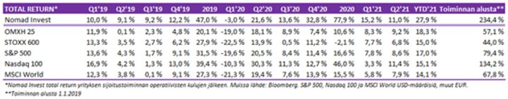
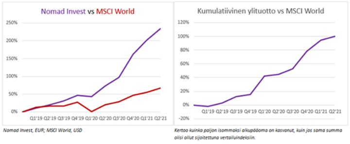
Tyydyttävästä lopputulemasta huolimatta, toinen kvartaali oli kaikkea muuta kuin tyydyttävä. Haasteita riitti kaikilla strategioiden saroilla. Välillä pidempiaikaiset positiot eivät toimineet, välillä taas treidaus. Soutaa, huopaa. Pääkoppa on ollut kovilla.
Markkinaneutraalit strategiat olivat kenties suurin haaste. Markkina on tällä hetkellä ”normaalia” enemmän epärationaalinen. Riskiarbitraasit tuntuvat menevän selvästi leveämmälle ja kestävän pidempään kuin ehkä normaalisti olisi odottanut. Näin on tilanne useissa fuusioarbitraaseissa kuten Cargo/KCI ja Altia/Arcus.
Samoin osakesarjojen erot ovat levähtäneet uusille tasoille ja niiden tiukentuminen näyttää vain kestävän. Lisäksi Ruotsissa on useampi sijoitusyhtiö, joista ollaan valmiita maksamaan 50-70% preemiota NAV:iin. Näistä äärimmäisin esimerkki on Latour.
Samoin älyttömyydet hyperintamalla (esim. AMC) tuntuvat vain jatkuvan, vaikka isoimpia kuplimisia on tyhjennelty alkuvuoden kiiman jälkeen. Laadusta ollaan jälleen maksamassa älyyttömyyksiä. (Yllä mainituista kaikissa meillä on tai on ollut positiot päällä.)
Kvartaalin tuotto muodostui pienistä puroista ja tuskallisen vääntämisen tuloksena. Megaonnistumiset olivat vähissä. Mainitsemisen arvioisia tuottoja olivat:
- Salkun yhteen suurimmista omistuksista Adapteoon tuli yritysostotarjous. Adapteo oli myös Q1:n yksi tuottoisimmista ja ostotarjous tuli kirsikaksi kakkuun. Ostimme osaketta viime syksynä.
- Tecnotreessa olimme mukana toukokuun alusta, niin kuin ilmeisesti koko Suomen finanssi-Twitteri, yhden ison omistajan myydessä osakkeita.
- Tuottoisa oli myös Nokian isompi osto vahvaan Q1-tulokseen. Näistä ainoastaan Nokiassa olemme edelleen mukana. Näimme siinä tarinan muutoksen ja lyhyen aikavälin potentiaalin 5.50-6.00 eurossa.
- Kulta antoi takaisin sen, minkä se aikaisemmin Q1:llä otti. Olimme lisänneet sitä matkalla alas pitäen osuuden salkusta reilussa 10%:ssa. Nyt kullan noustua olemme yli puolittaneet omistuksen.
Haasteet eivät ole loppuneet kolmannen kvartaalin alussa, vaan löydämme itsemme meille varsin harvinaisesta yli kolmen prosentin salkun laskusta. Long/short-strategian hyvä puoli on, että onnistuessaan, kehitys voi olla varsin stabiilia. Huono puoli on se, että onnistuessaankin matkalle osuu hetkiä, jolloin molemmat puolet strategiasta tökkivät.
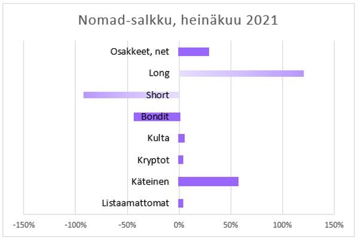
Organisaation koko tuplaantui
Q2:n aikana saavutimme yrityksenä merkittävän virstanpylvään, kun teimme historiamme ensimmäiset rekrytoinnit. Niiden seurauksena organisaation koko on tuplaantunut.
Me perustajaosakkaat emme varsinaisesti ole mitään organisatorisia taitajia, joten koko prosessi rekrytoinnista palkkaukseen on ollut mieluinen oppimiskokemus. Nyt olemme sovitelleet itsellemme luonne- ja asiajohtajien viittoja. ”Management by perkele” ei kuulemma ole enää nykypäivää…
Toukokuussa tiimissämme aloittivat treiderinä Klaus Kärjenmäki ja analyytikkona Niclas Juslin. Heistä on ollut jo nyt merkittävä apu pyrkimyksissämme skaalata toimintaamme isommaksi. Särmiä tekijämiehiä!
Kuin Strömsössä
Niin uskomattomalta kuin se saattaa kuulostaa, odotetaan yhtiöiden globaalisti (MSCI World) tekevän tänä vuonna noin 10% kovempaa tulosta kuin ennen koronaa. USA:ssa (S&P500) oltaneen tuloksissa jo 13% ylempänä. Euroopassa (STOXX600) sen sijaan saavutettaneen vuoden 2019 tulostaso nipin napin.
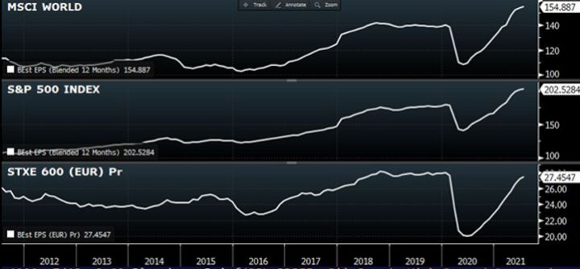
Vuosi sitten tässä katsauksessa kuvailimme skenaarion, jossa kaikki menisi kuin Strömsössä. Kerta kaikkiaan niin on mennyt. Itsellämme meni aikamme ennen kuin havahduimme skenaarion realistisuuteen, mutta vihdoin viime syksynä näimme valon.
Pelikirjamme tälle vuodelle oli:
- Reflaatio-treidi
- Kasvu- ja inflaatioyllätys
- ESG-kupla
Näistä kaikki ovat jossain määrin toteutuneet. Reflaatio-treidi, joka sai lähtölaukauksensa jo vuosi sitten loppukesästä, vedettiin kasvu- ja inflaationäkymien vetäminä nyt loppukeväällä jo varsin yliostetuksi. Me tyylillemme uskollisina toki hyppäsimme liian aikaisin pois kyydistä.
Keväällä inflaatio oli jo aika lailla kaikkien huulilla. Uutiset kirjoittivat siitä lähes päivittäin. Raaka-aineiden, niistä hyötyvien yhtiöiden, pankkien ja teollisuusyhtiöiden osakkeiden kurssit olivat jo monin paikoin elpyneet koko koronalaskun tai enemmänkin.
Anekdoottisena todisteena kenties jo liiallisista inflaatio-odotuksista kuuli rannalla puhuttavan nousevista koroista. Lisäksi lapsen tarhakaverin isosisko oli kysynyt äidiltään, mitä inflaatio tarkoittaa. Kansikuvasignaali osui myös jälleen nappiin. Tuolloin markkinan hinnoittelemat inflaatio-odotukset kääntyivätkin laskuun painaen jälleen pitkiä korkoja alas.
Myös ESG-kuplaan saatiin puhallettua tammikuussa entisestään ilmaa ja lopulta monet etenkin uusiutuvan energian saralla olleet kasvulupaukset tulivat takaisin maan pinnalle, tai ainakin lähemmäs maan pintaa, laskiessaan 30-50% tammikuun huipuista.
Narratiivit ajat pääomia ja narratiivisykli on nopeutunut. Kasvu- ja arvosektorit ovat vuorovedoin nousukärjessä ja sijoittajalaumat juoksevat milloin minkäkin teeman mukana.
Markkinoiden tehtävä on turhauttaa niin suuri joukko sijoittajia kuin mahdollista. Markkinat ovat koko kevään ja kesän kivunneet, vaikka useat markkinaosapuolet ja -kommentaattorit ovat odottaneet jo laskua.
Indeksitasolla laskuyritykset ovat jääneet varsin pieniksi, kunnes ne on kiireen vilkkaan ostettu takaisin ylös. Pinnan alla kuitenkin etenkin monet pienemmistä kasvu- ja teknologiayhtiöistä ja kuumimmista koronaosakkeista ovat olleet korjausmoodissa suurimman osan vuodesta.
Ainahan markkinan neliulotteisen shakin seuraavan siirron ennakoiminen on haasteellista. Nyt se tuntuu olevan erityisen vaikeaa. Pelikirjaa loppuvuodelle miettiessämme on yksi kysymys, johon palaamme aina uudelleen ja uudelleen. Ja se on tuo iso kysymys inflaatiosta ja kasvusta.
Suuri tuntematon
”The fundamental cause of the trouble is that in the modern world the stupid are cocksure while the intelligent are full of doubt.” – Bertrand Russell
Aikaisemmin oli ”helpompi” nähdä, että inflaatio-odotukset tulevat nousemaan. ”Helpompi” oli edellä lainausmerkeissä siksi, että vastaus kohta seuraaviin kysymyksiin on suuri tuntematon. Kaikkiin kysymyksiin inflaatiosta suhteessa niihin on helpompi vastata.
Nyt kysymyksinä ovat:
a) kuinka korkealle inflaatio-odotukset nousevat, ja b) kuinka pitkään ne pysyvät ylhäällä, sekä c) mitä tapahtuu kasvulle?
Fed ja suurin osa sijoittajista (kyselyn mukaan 70%) ovat sitä mieltä, että inflaatio tulee olemaan hetkellistä. Argumentteja väliaikaisen inflaation puolesta on useita.
- Koronan aiheuttama patoutunut kysyntä tulee rauhoittumaan. Samalla tarjontapuolen ongelmat tulevat ajan myötä korjaantumaan.
- Inflaatio nousee alhaiselta vuoden takaiselta tasolta, joten base-efekti tulee helpottamaan.
- USA:n stimulussekit kuivuvat syksyllä. Tuolloin niiden vuoksi töihin palaamatta jättäneet ja sen sijaan osakemarkkinoilla spekuloineet kansalaiset joutuvat palaaman töihin helpottaen paikka paikoin noussutta palkkatasoa.
- Päästään tietyllä tapaa takaisin koronaa edeltäneessä lähtöruudussa, sillä erotuksella, että valtioiden alijäämät ovat entistä korkeammat. Se ei välttämättä ole varsin inflatorinen vaikutukseltaan. Aiemminkaan aggressiivinen rahapolitiikka ei ole saanut inflaatiota ylös, miksi nyt?
Toisaalta pidempiaikaisen inflaation puolesta on myös varsin relevantteja argumentteja.
- Korona on saattanut muuttaa työmarkkinoita pysyvästikin. Asenteet työtä ja työntekemistä kohtaan ovat muuttuneet. Useat ovat rohkaistuneet siirtymään täysin uuteen ammattiin tai aloittaneet oman yrityksensä. Paikallisesti, tietyillä aloilla jo etenkin USA:ssa nähdyt työvoimapulat voivat olla täten pysyvämpiä kuin on luultu.
- Nousseet arvostukset osakkeista asuntoihin ja metsiin ovat nostaneet ihmisten varallisuutta mahdollisesti rohkaissen lähempänä eläkeikää olevia siirtymään ennen aikaiselle eläkkeelle. Tämä ei pelkästään heitä kapuloita työmarkkinoille, vaan voi lisätä kulutusta eläkeläisten tyypillisesti kuluttaen suhteellisesti enemmän kuin työikäisten. Lisäksi monien länsimaisten poliittisten johtojen siirtyessä askeleen vasemmalle, on yleisenä pyrkimyksenä ollut nostaa minimipalkkatasoa.
- Suurimpana muutoksena kuitenkin on koko rahoitusmarkkinajärjestelmän siirtyminen entistä enemmän inflaatiohakuiseen ja korkeampaa inflaatiota sallivaan tilaan. Se on myöskin asenteellinen muutos eikä se pelkästään koske keskuspankkeja, vaan myös finanssipolitiikkaa, jossa aikaisempaa innokkaammin on päästy alijäämärahoituksen makuun. Se voi kuitenkin tarkoittaa sitä, että alijäämäelvytys on tullut jäädäkseen. Ja se voikin olla inflatorista.
Ostamme argumentit puolin ja toisin. Mielestämme kuitenkin, jahka koronan yllä kuvatut kertaluonteiset vaikutukset on sulateltu, tulee pidempiaikaisten tekijöiden nettovaikutuksena inflaatio asettumaan korkeammalle tasolle kuin on aikaisemmin totuttu. Ja tämä yhdessä tuon asenteellisen muutoksen kanssa voi olla oiva muuttamaan inflaation odotuskuvaa.
Inflaatiossa on hassua se, että se on osaltaan itse itseään ruokkivat kierre, jossa odotukset ajavat käyttäytymistä, joka taasen ajaa hintoja, joka puolestaan ruokkii odotuksia jne. Mahdolliset inflaatioyllätykset voivat sen myötä olla jatkossa yleisempiä.
Juuri nyt inflaatio- ja kasvuodotukset ovat kääntyneet keväällä laskuun tukien inflaation ”väliaikaisuusteoriaa” ja turhauttaen juuri sopivasti äärimmilleen viritettyjä reflaatiopositiointia.
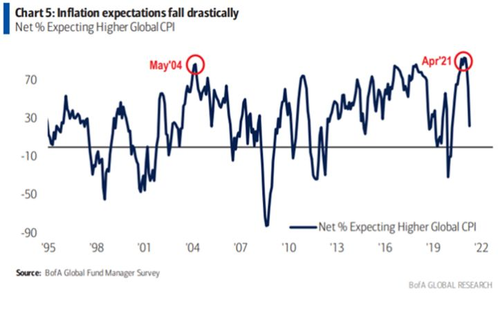
Kasvuodotukset ovat myös tulleet alas osaltaan koronan deltamuunnoksen vetämänä. Tämä on rajoittanut rajoituksien purkua etenkin Aasiassa. Kiinassa myös regulatoriset kiristystoimet ovat lyöneet monille aloille, etenkin teknologiasektorille, kapuloita rattaisiin. Nähtäväksi jää miten Kiinan kasvuhuolet leviävät muualle maailmaan.
Globaalit ostopäällikköindeksit tekivät V-muotoisen elpymisen ja ovat olleet jo viime kesästä paranevia aikoja ennakoiden yli 50 pisteen. Nyt viimeisimmät luvut ovat alkaneet hieman taipumaan alas. Jos paranemista odotetaan, mutta vähemmän kuin aikaisemmin, voi tila positiivisille yllätyksille jäädä vähäiseksi marginaaliostajan houkuttelemiseksi. Kuvassa myös MSCI World-indeksin tulosennusteet tuleville 12 kuukaudelle.
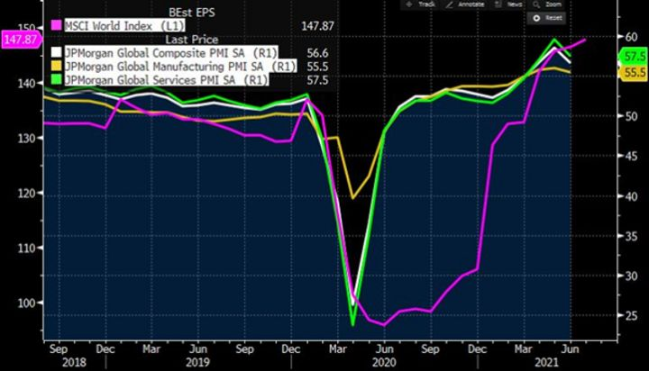
Seuraamme miten inflaation ja kasvun narratiivien kehittyvät, sillä ne vaikuttavat Fedin ja muiden keskuspankkien toimiin. Voihan olla, että kasvu- ja inflaatio-odotusten hetkellinen takapakki toimii hetkellisenä pelastuksena Fedille. Reaalikorot ovat painuneet jo syvemmälle miinukselle.
Ennakoimme loppuvuodesta mahdollisesti muodostuvan yllätyksellinen inflaation tason ja pysyvyyden suhteen. Sitä ennakoiden pidämme silmällä syklisten osakkeiden kesän käynnissä ollutta suhteellista korjausta hetkellisiltä yliostetuilta ja ylipositioituneilta tasoilta. Arvo-osakkeiden suhteellinen nousu jäi jälleen lyhyeksi, mutta näemme kehityksen väliaikaisena korjauksena pidempiaikaiseen inflaatiotreidiin.
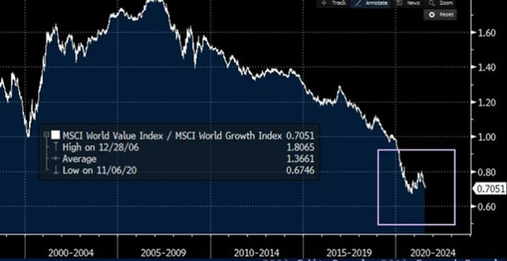
On myös mahdollista, että globaali talous Amerikan Yhdysvallat etunenässä pystyvät vastaamaan ennen näkemättömään stimuluksella pönkitettyyn ja poikkeuksellisesta patoumasta purkautuvaan kysyntäpiikkiin tarjonnalla ja ennakoimamme inflaatioyllätys tulematta. Sen sijaan maailmassa päästäisiin monien povaamaan ”Roaring ’20s” -skenaarioon.
On hyvä pitää mieli avoimena eri vaihtoehdoille ja muistaa, että kenelläkään kuolevaisella ei voi olla varmoja vastauksia mihinkään mikä liittyy tulevaan. Kaikki ”varmoina” annetut näkemykset voi sivuuttaa ja moisen ”asiantuntijan” älyllisen rehellisyyden kyseenalaistaa.
Tosiasia on, että emme voi varmuudella tietää edes, kuinka ”oikeassa” eri skenaarioiden todennäköisyydet ovat. Reilun kolikon heiton todennäköisyydet tiedetään varmuudella. Suljetun systeemin, jossa kaikki eri vaihtoehtomahdollisuudet tiedetään, voidaan antaa varmoja ennustuksia.
Valitettavasti maailma on kaikkea muuta kuin suljettu systeemi. Se äärimmäisen monimutkaisena kokonaisuutena tarjoaa loputtoman määrän eri polkuja. Ja koska emme voi mitenkään mallintaa kaikkia noita eri vaihtoehtoja ja täten varmuudella antaa niiden toteutumistodennäköisyyksiä, olemme supistettuja arvauksien tasolle.
Odotamme loppukesän ja syksyn tuovan mukanaan normaalit kausiluonteiset tuulisemmat ajat. Vahvan markkinanäkemyksen valo on kuitenkin himmentynyt. Ja kun vahvaa näkemystä ei ole, pitää asemoituminenkin olla varovainen.
Mitkä yhtiöt pärjäävät kävi, miten kävi?
Koska emme voi mitenkään tietää miten vaakakupit tulevat asettumaan, eikä meillä sen puolin ole minkäänlaista etua antaa mitään todennäköisyyksiä (vaikka olemmekin mututuntumalla korkeamman ja pysyvämmän inflaation kannalla), olemme yrittäneet miettiä, mitkä yhtiöt pärjäisivät olisi lopullinen makroasetelma mikä tahansa.
Korkea inflaatio suosisi arvo-osakkeita, mutta yleisesti isoja, hinnoitteluvoimaisia, kannattavia ja vahvataseisia yhtiöitä. Alhainen inflaatio puolestaan pitäisi korot ankkuroituina, joka tukisi juuri kasvuosakkeita. Alhaisen kasvun varalta yhtiöt, jotka kykenevät kasvamaan syklistä riippumatta ja osoittamaan rakenteellisista kasvupotentiaalia pärjännevät.
Korkea kasvu ja inflaatio puolestaan tarkoittaisi, ettei omistamiemme yhtiöiden arvostukset puolestaan saisi olla liian herkkiä nouseville koroille. Siksi ensimmäinen teemamme on ”kasvu järkevään hintaan”.
Sen jälkeen mietimme, josko uusiutuvan energian ja ilmaston lämpiämisen ehkäisemistä edesauttavia yhtiöitä uskaltaisi jo lähteä ostamaan. Viimeisenä tutkailemme rahoituskohteita yltiökalliiden laatuosakkeiden ja koronavoittajien joukosta.
1. Kasvua järkevään hintaan
Pidämme isojen Facebookin, Amazonin, Microsoftin ja Googlen kaltaisten teknologiayhtiöiden kasvunäkymistä eivätkä niiden arvostukset ole päätä huimaavia. Olemme kaikkia omistaneet kevään aikana, mutta luopuneet kuitenkin kaikista yksitellen, viimeisimpänä Amazonista kesällä. Syyt löytyvät hyvistä kurssikehityksistä ja seuraavasta kuvasta: sijoittajat ovat ostaneet itsensä jälleen selvään tekki-ylipainoon.
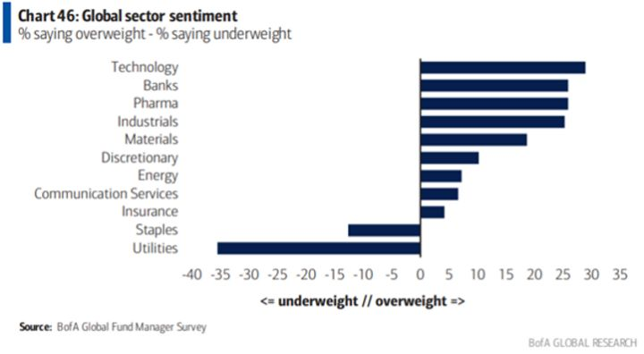
Markkinalla kirjoitushetkellä on käynnissä deltamuunnoksen muotoon verhoiltu narratiivi kasvupelosta, joka on laskenut korkoja. Taustalla on myös sijoittajien asemoituminen yhteen ja samaan näkemykseen nousevista koroista, jota on purettu.
Olemme kuitenkin myöhemmin syksyllä ennakoimaamme uutta syklisten ja korkojen nousua varten silmällä pitäen suosineet ”järkevä hinta”-kohtaa. Korkojen noustessa arvostuksen lähtötaso ei saisi olla liian kireällä.
Samalla fangit ja kumppanit ovat hetkellisesti yliostettuja, odottelemme niissä uusia oston paikkoja ja olemme pyrkineet löytämään strukturaalista kasvua järkihintaan muualta.
Siksi olemme lähteneet merta edemmäs kalaan ja aina Kiinaan asti, jossa arvostukset ovat paikka paikoin erittäin kiinnostavia. Toki riskit ovat korkeammat, mutta kurssikehityksiä katsoessaan näyttää vahvasti siltä, että nuo riskit ovat jo ainakin jossain määrin realisoituneet.
USA:n ja Kiinan teknologiayhtiöistä koostuvat indeksit ovat erkaantuneet toisistaan. Kiinassa indeksi on jo koronaa edeltäneillä tasoilla. Paniikki on päällä ja se herättää mielenkiintomme.
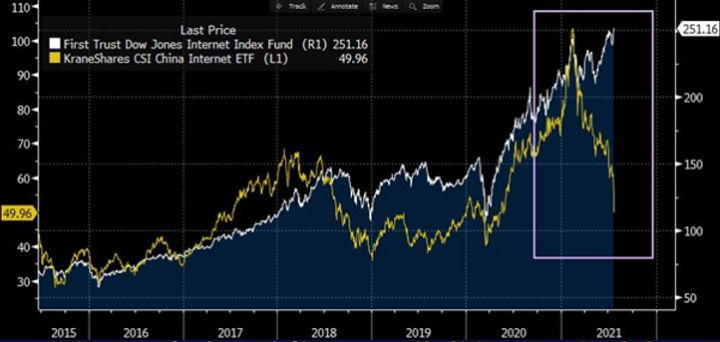
Kiinasta haaviin on jo aikaisemmin keväällä tarttunut Alibaba, josta kirjoitimme aikaisemmin. Olemme myös aloittaneet kevyesti ostot muutamissa muissa teknologiayhtiöissä siellä. Tämä on teema, johon paneudumme nyt lisää, ja josta myöhemmin mahdollisesti tarkemmin.
2. Ilmaston lämpiäminen
Seuraava teema ei ole myöskään uusi lukijoillemme, mutta se on vuosi vuodelta entistä tärkeämpi. Nyt kun pahin kupliminen on saatu korjattua, ainakin jossain määrin, mietimme kuumeisesti, miten voisimme sijoittaa tähän tulevien vuosikymmenien kenties suurimpaan sijoitusteemaan.
Voi hyvin olla, että olemme vielä liian aikaisessa. Joka tapauksessa tulevaisuuden voittajien arvioiminen tässä vaiheessa on vaikeaa, lähes mahdotonta. Olemme kuitenkin aloittaneet tällä teemalla sopivan portfolion rakentamisen tietäen, että jotkin näistä voivat hyvinkin vielä mennä nurin.
Ilmaston lämpiäminen ei ole uskon asia. Se on fakta. Vaikka se olisikin uskon asia, voi sitä verrata Pascalin vedonlyöntiin. Ihmiskunnan tulevaisuuden kannalta on vain parempi uskoa ja toimia ilmaston lämpiämisen estämiseksi, kuin olla tekemättä mitään, jolloin vaihtoehtona voi olla ”iankaikkinen kärsimys”.
Nyt tuntuu siltä, että tähän ollaan alkamassa kunnolla heräämään. Poliittinen tahtotila alkaa löytyä. Poliitikot ovat löytäneet rahapuun – keskuspankkiavusteisen alijäämärahoituksen – jolla ongelmat voidaan ratkaista.
Erinomainen perehdytys aiheeseen on Bill Gatesin kirja ”How To Avoid A Climate Disaster”. Sen pitäisi olla pakollista luettavaa kaikille, jotka välittävät lastensa ja lastenlastensa tulevaisuudesta. Kirja maalaa varsin ahdistavan kuvan haasteen laajuudesta, mutta luo uskoa siihen, että katastrofi kyettäisiin välttämään.
Maailma tuottaa viisikymmentäyksi miljardia hiilidioksidiekvivalenttia tonnia kasvihuonepäästöjä vuodessa. Sen verran täytyisi saada lopulta nettona poistettua, jotta maailma pelastuisi. Urakka on massiivinen eikä siihen ole mitään yhtä ratkaisua.
Omistamme mm. Aker Clean Hydrogenin osakkeita. Q2:lla teimme muutaman uuden hankinnan, joista yksi on salkussa meille varsin merkittävässäkin kokoluokassa.
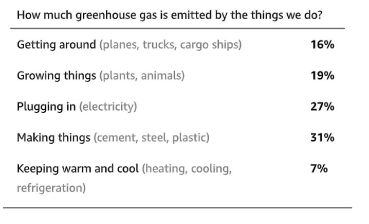
Paljon on puhetta sähköautoista, mutta henkilöliikenne ovat ”vain” noin 7% maailman päästöistä. Ratkaisuja tarvitaan kaikilla saroilla. Keskiössä ovat sähköntuotanto ja sähkönsiirtoverkot.
Sähköntuotanto on vajaat 30% kokonaispäästöistä. Sähköntuotannon saaminen puhtaaksi on tärkeää ei pelkästään sen koon vuoksi, vaan siksi, että puhtaalla sähköenergialla voidaan korvata myös mm. teollisuuden käyttämää likaisen energian tarvetta. Jotta kokonaisuus toimisi, täytyy sähköverkkojen toimia tehokkaasti.
Aurinko- ja tuulivoimalla tuotetun sähkön yksi ongelmista on sen ajoittaisuus. Aurinko ei paista koko ajan eikä yhtä paljon joka puolella maailmaa. Aurinko- ja tuulipuistoja ei voi myöskään rakentaa lähelle kaupunkeja, joissa sähkön kulutus tapahtuu. Pelkästään linjojen eripituisuus aiheuttaa ongelmia jo tänä päivänä.
Nämä tekijät korostavat tarvetta sähköverkon optimoinnille ja modernisaatiolle. Ja tuo tarve vain korostuu, kun energian tarve kasvaa ja uusiutuvien aurinko- ja tuulivoiman osuus tuosta kokonaisuudesta toivottavasti kasvaa voimakkaasti.
Toukokuussa Ruotsin markkinalle listautunut Smart Wires tarjoaa ratkaisua tähän ongelmaan. Heidän sähköverkkoon asennettavan SmartValve-moduuliin avulla sähköverkkoa pystytään optimoimaan parantaen verkon luotettavuutta ja vähentäen energianhinnan piikkejä.
Sähköllä on tapana virrata sinne, mihin sen on helpoin virrata. Perinteisesti verkkoyhtiöillä on ollut vain vähän keinoja ohjailla sähkön kulkua sähköverkossa. SmartValven avulla voidaan työntää voimavirtaa pois ylitarjonnan sähkölinjoilta ja vetää sitä alitarjonnan linjoille.
Smart Wires on alle EUR400m markkina-arvon yhtiö, jota voisi luonnehtia kysynnän kynnyksellä olevaksi yhtiöksi, joka paraikaa validoi tuotettaan markkinalle. Se kilpailee jättien kuten GE:n ja Hitachin kanssa, mutta SmartValvella on selvät kilpailuedut suhteessa kilpailijoihinsa:
- SmartValve on kontin kokoinen ja täten helposti liikuteltavissa sinne, missä tarve kulloinkin on. Asennuksen jälkeen voi kontin siirtää uuteen paikkaan jopa muutamassa päivässä.
- Keskimääräinen projektikustannus on USD5-15m, kun kilpailijoilla on jopa 100m.
- 6-12kk lead time tuo joustavuutta ja helppoutta sähköverkon suunnitteluun ja budjetointiin. Kilpailijoilla lead time 2-3 vuotta.
- Suhteessa kustannuksiin sähkönsiirron tehokkuuden kasvu on merkittävästi korkeampi.
- SmartValve on käytännössä valmistettu silikonista ja sitä pyörittävät ohjelmistot. Kilpailijoiden vastaavat ovat mekaanisia ja valmistettu kuparista ja teräksestä.
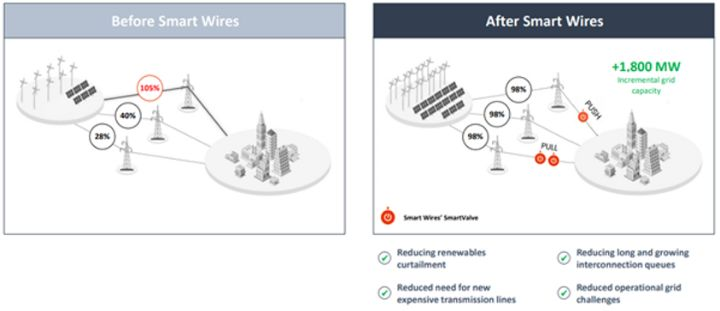
Sähköverkkotoimijat ovat perinteisesti olleet hyvin konservatiivisia investointipäätöksissään. Uusia ratkaisuvaihtoehtoja testataan vuosia ennen lopullista päätöstä. Smart Wires on saanut merkittävän päänavauksen ja tärkeän referenssiasiakaan UK:sta. Nartional Grid on tilannut ja asentamassa 48 SmartValvea vapauttaen Pohjois-Englannin verkossaan yhteensä 1.5GW kapasiteettia, jolla miljoona kotitaloutta pääsee käsiksi uusiutuvaan energiaan.
Smart Wiresin pipeline on vasta lähtenyt merkittävään kasvuun ollen tällä hetkellä USD2bn, jonka yhtiö odottaa kasvavan 12 miljardiin vuonna 2025. Suhtaudumme tähän varauksella ja olisimme siitä positiivisen yllättyneitä. Samalla kuitenkin uskomme tutkimukseemme perustuen yhtiön potentiaaliin ja teknisiin kyvykkyyksiin.
Tarve sähköverkkojen uudistuksille ja tehostuksille tulee tulevina vuosina ja vuosikymmeninä olemaan massiivinen ja yhtiön pipeline-ohjeistus vain toimii osviittana tästä potentiaalista. Kuten aina, riskit tämän vaiheen yhtiöissä ovat aina olemassa, mutta optionaalisuus ja tuottopotentiaali antavat hyvän kompensaation tuon riskin kantavalle sijoittajalle.
3. Short kalliit koronavoittajat
Vuosi sitten maaliskuussa osakemarkkinat olivat jo laskeneet 30%+ ja valmistautuivat eeppiseen nousumarkkinaan hetkenä, jolloin itse koronan tapaukset olivat vasta lähdössä kunnolla käyntiin. Markkinoilla nähtiin jo polku ulos katastrofista. Nyt ollaan pääsemässä toiseen äärilaitaan.
Analyytikot eivät millään meinaa pysyä ennusteidensa kanssa yhtiöiden tuloskehityksen elpymisessä mukana. Kvartaali toisensa jälkeen sitten viime vuoden Q2:n ovat ennusteet olleet dramaattisen pielessä ja liian alhaiset. Vielä tänäkin päivänä, kun yhtiöt raportoivat vuoden 2021 Q2-tuloksiaan ovat tulokset ylittäneet ennusteet USA:ssa keskimäärin 20%.
Kun ennusteet vihdoin on saatu hilattua ylös, eikä tulosylityksiä enää saada, on parhaat myyntipaikat todennäköisesti jo menneet. Ihmetellään, kun osakkeet laskevat ”vahvoihin” lukuihin. Ne laskevat, koska jossain vaiheessa vahvat luvut ovat jo hinnoissa.
Jos yhtiön arvostustaso on tarpeeksi korkealla voi riittää, että nousuvaran suuruus on suhteessa vähäisempi kuin ennen. Eli jälleen se toinen derivaatta.
Peukalosääntönä (ja tämä on allekirjoittaneelta hihasta revitty, eikä perustu mihinkään tutkimukseen) voisi sanoa, että kolmannes osakkeiden trendistä perustuu fundamentteihin. Loput liikkeestä selittyvät ihmisluoteella ja massakäyttäytymisellä.
Kerta toisensa jälkeen nähdään, että päädytään ekstrapoloimaan viimeaikaisesta kehityksestä ja tekemään liian kauaksi kantavia oletuksia sen jatkumisesta. Asioilla on kuitenkin tapana palata keskiarvoonsa. Niin myös trendeillä.
Tähän käyttäytymiseen perustuvat faktorituotot kuten arvo ja momentum, joiden on todettu viimeisten yli sadan vuoden aikana olleen lähestulkoon pitkäaikaisimpia ilmiöitä markkinoilla. Ja mikseivät olisi koska ihmisluonne on ainoa, joka markkinoiden loputtoman monimutkaisessa yhtälössä on vakio.
Nyt ollaan tilanteessa, jossa markkinoilla on läjäpäin osakkeita, joilla on purjeissaan useiden eri faktoreiden puhaltama myötätuuli.
- Ennusteiden ylitys (esim. ed. 3kk EPS-muutos-%)
- Momentum (esim. ed. 12kk kokonaistuotto)
- Alhainen volatiliteetti (esim. ed. 12kk alhaisin volatiliteetti)
- Laatu (verrattuna edellisiin, jotka ovat puhtaan mekaanisia, voi laatua määrittää monella tavalla kuten esim. RoE, velkaisuus, tuloksen kehityksen tasaisuus ja ennustettavuus, kannattavuus jne.)
Faktoreita on toki muitakin, mutta nämä sopivat erityisen hyvin noususyklin loppuvaiheeseen.
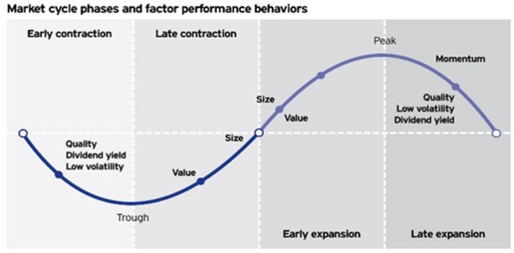
Tulee mieleen useita yhtiöitä, jotka täyttävät edellä mainitut kriteerit. Niiden alku ja juuri on koronan aiheuttamassa myönteisessä tuloskehityksessä. Tällaisia ovat esimerkiksi useat kuluttajatuoteyhtiöt kuten Thule, Dometic ja Harvia teollisuus- ja monialayhtiöt kuten Nibe ja Latour, sijoitusyhtiö EQT sekä terveyslaitealan Getinge ja Arjo.
Näissä kaikissa sijoittajat odottavat historiallisen hyvien aikojen jatkuvan ja ovat valmiita maksamaan niistä odotuksista historiallisen korkeita kertoimia. Eli kuten aina, ollaan valmiita ottamaan eniten riskiä huipulla.
On mahdollista, että kysyntäbuusti ja hyvät ajat jatkuvat vielä, mutta vertailuluvut alkavat tulla vastaan. Entiseen malliin odotusten ylittäminen ei kuitenkaan voi jatkua loputtomiin. Jotkin muutokset voi koronan myötä olla pysyvää, mutta edelleenkään puut eivät kasva taivaisiin.
Tänä päivänä markkinoilla on useampi biljoona dollaria systemaattisissa strategioissa. Niiden päälle voi asetella vielä oman momentum-faktorin, koska loppusijoittaja metsästää tunnetusti parhaimpia viime aikojen tuottoja myös eri faktoriteemoista.
Kaikissa edellä mainituissa osakkeissa ei toki välttämättä ole systemaattista rahaa merkittävästi. Joissakin se voi olla hyvinkin merkittävässä roolissa. Kuvan faktorituotot heijastelevat kuitenkin sijoittajakäyttäytymistä markkinoilla eri syklien vaiheissa. Noususyklin loppupuolella ollaan oltu valmiita maksamaan ”hyvinä” pidetyistä osakkeista, kuten nyt on nähty.
Jos tulosylitysten suuruus pienenee, ennusteiden ylityksien perusteella osakkeita valitsevat strategiat alkavat pienentämään omistuksiaan. Jos niiden myyntipaine pysäyttää nousun, alkavat momentum-strategiat pienentämään omia omistuksiaan, koska ne ostavat ja omistavat vain vahvimpia osakkeita. Jos niiden myyntipaine saa osakkeen alas, nousee volatiliteetti, jolloin alhaisen volan-strategiat lähtevät myymään.
Laatuyhtiö on laatuyhtiö, elleivät sitten sen viimeaikaiset mittarit ole olleet jotenkin poikkeuksellisen hyvät, ja jatkossa tilanne olisi toisin. Voisi luulla, että tämä faktori pitäisi parhaiten päänsä eikä lähtisi myymään. Joka tapauksessa pelkästään tuloskehityksen muutos voi laukaista kierteen, joka voi saada isojakin liikkeitä aikaan. Sama, mikä on nyt toiminut matkalla ylös, toimii myös matkalla alas.
Tänä päivänä monien koronahyötyjien ennusteet laahaavat vielä perässä, mutta ne ovat jo saavuttamassa tulostasoa. Suomesta sellainen on myös Kesko.
Kahden positiivisen tulosvaroituksen jälkeen yhtiö raportoi hyvät Q2-luvut, jotka ylittivät odotukset, mutta yhtiö ei enää nostanut ohjeistustaan. Ennusteet alkavat vihdoin asettumaan linjaan yhtiön näkemän kanssa.
Rakentamisen ja talotekniikan kauppa kasvoi +18%, autokauppa +50%! Jos vuoden päästä yhtiö raportoi vastaavista kasvuluvuista, olisi se aikamoinen temppu.
Vielä toistaiseksi yhtiö on kyennyt juoksemaan inflaation edellä, mutta jossain vaiheessa Keskonkin kokoisen ostajan suhteellinen etu on syöty. Kun yhtiö samalla tekee historiallisen korkeaa kannattavuutta, herää kysymys: miten käy tuloskehityksen jatkossa, kun tämänhetkinen tulos perustuu poikkeukselliselle kasvubuustille ja historiallisen korkealla kannattavuudelle?
Kun markkina samalla antaa osakkeelle historiallisen korkeat kertoimet, ollaan varsin mielenkiintoisessa tilanteessa. Keskon osakkeenomistajien puolesta todellakin toivoisi, että homma menisi jatkossakin kuin Strömsössä.
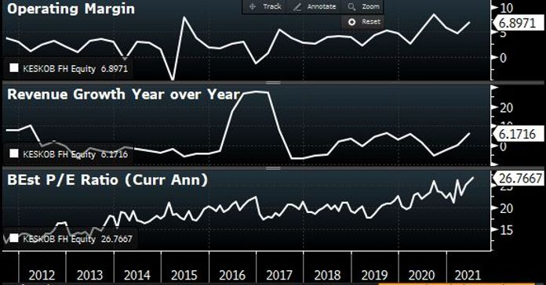
Olemme aloittaneet myynnit Keskosta ja Latourista. Ilman katalyyttia ja pelkästään arvostussyistä ei ole optimaalisin strategia (”Never short on valuation.”), mutta näemme katalyytin häämöttämän horisontissa juuri sitä kautta, että ennusteita ei enää jatkossa pystytä ylittämään, jolloin kertoimilla on roimasta varaa joustaa alas. Omistamme osaa shorttia vastaan 12% diskontolla vaihtuvaa Keskon A-osaketta, mutta olemme nettoshorttina B-osaketta.
Samoin olemme myyneet Latouria sekä nettona että sen listattuja portfolioyhtiöitä vastaan. Yhtiön 80% preemio NAV:iin on uusi historiallinen ennätys. Muut edellä mainitut ovat seurantalistallamme mahdollisten myynninpaikkojen varalta.
On pidettävä mielessä, että markkinoilla liikkeet jatkuvat pidempään, kuin useimmat ovat osanneet odottaa polttaen lyhyeksimyyjien näpit ja houkuttaen heikoimmatkin kädet mukaan ostamaan – pelkästään turhauttaen jälleen suurimman osan sijoittajajoukosta kääntyen lopulta laskuun, kuin varkain.
Jälkikäteen sekin olisi jälleen ollut niin helppoa.
Disclaimer:
Kolumnit sisältävät mielipiteitä ja mahdollisesti tietoa omista sijoituksistamme, jotka voivat vaihdella päivästä toiseen. Mitään, mitä kirjoitamme ei tule ottaa sijoitussuosituksena. Kuten teksteissämme painotamme, päätökset kannattaa aina tehdä itse. Lukija vastaa itse voitoistaan ja tappioistaan.